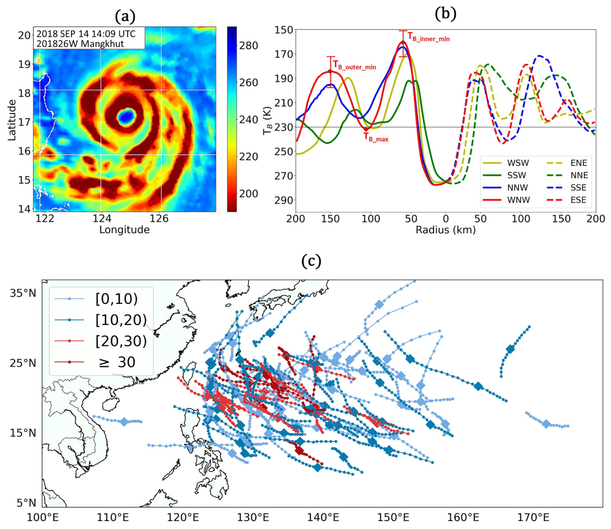
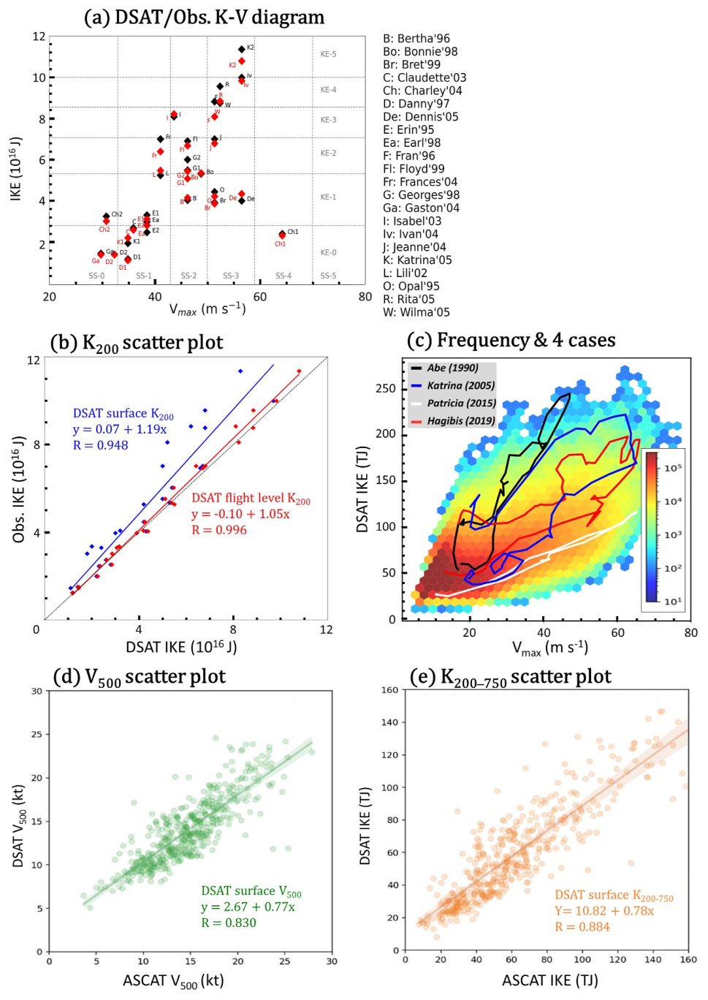
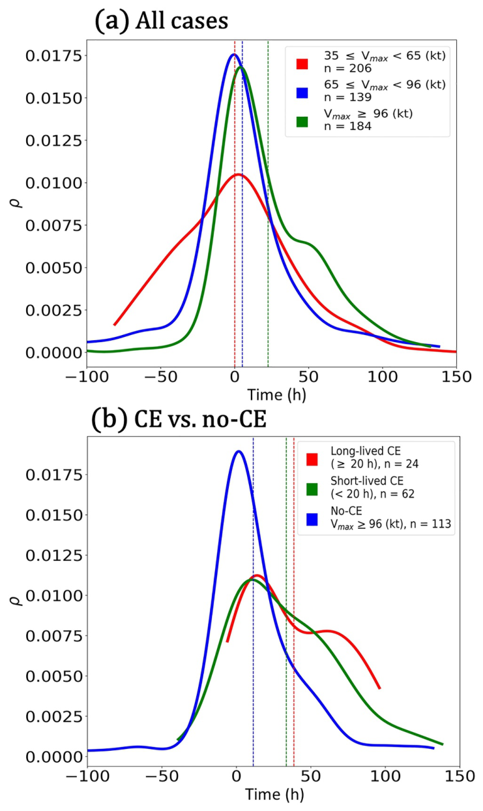
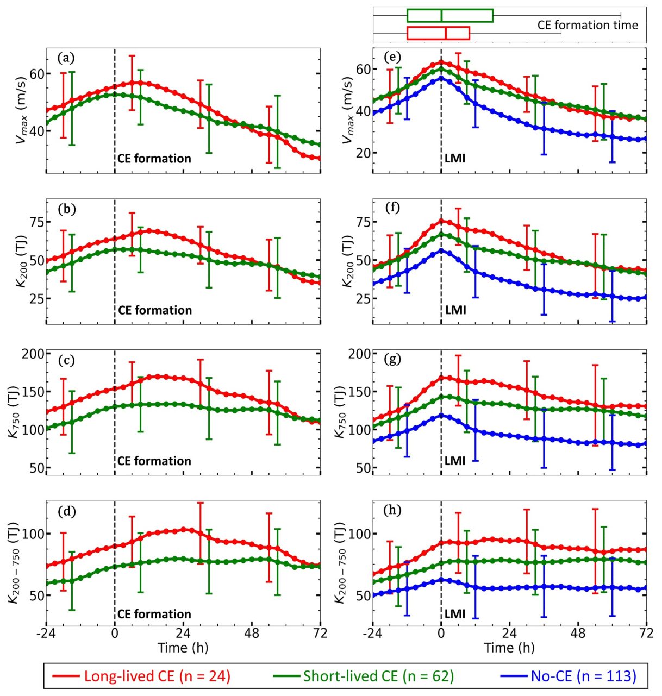
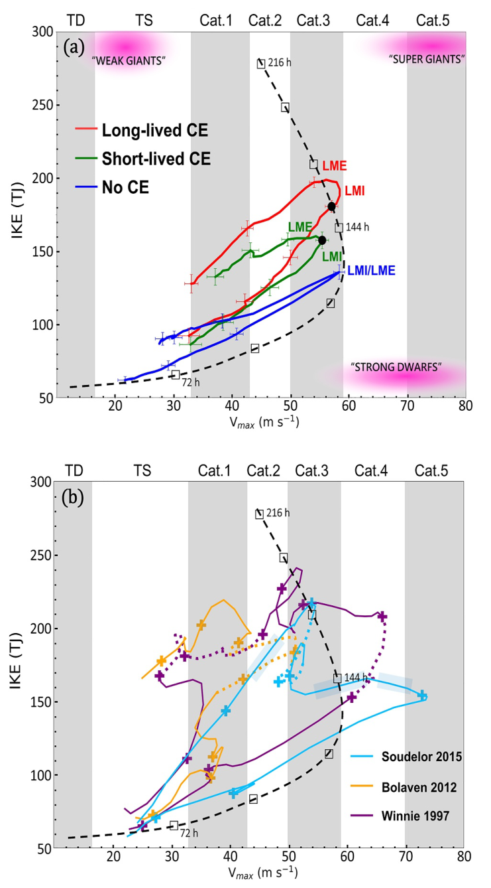

Long-Lived Concentric Eyewalls and Integrated Kinetic Energy in Tropical Cyclones (2025)#
Buo-Fu Chen, Chia-Le Chen, and Hung-Chi Kuo
Geophysical Research Letters, 52, e2024GL114429. https://doi.org/10.1029/2024GL114429
論文#
Abstract#
Long-lived concentric eyewalls (CEs) and short-lived CEs are accompanied by diverse structural parameters such as intensity (\(V_{\max}\)) and integrated kinetic energy (IKE). This study used a CE data set and an AI-based tropical cyclone (TC) wind profile reanalysis to examine the impact of CEs on TC evolution revealed by IKE–\(V_{\max}\) diagrams. AI-based wind profiles are a fusion of multichannel satellite imagery and ERA5 data, representing \(0\text{–}750\text{ km}\) profiles of axisymmetric surface winds. The AI-derived IKE has an \(R = 0.996\) against aircraft observations. Composite results show that short-lived CEs (duration \(<20\text{ h}\)) tend to maintain IKE, while long-lived CEs (\(25\%\) of all CEs) favor further IKE growth, contributing to TCs with an enormous circulation. It is suggested that CEs may modulate the TC life cycle, evolving from small, intense storms to large, mature storms to large, weak-intensity storms before their ultimate demise.
本研究探討長生命期同心眼牆（long-lived concentric eyewalls, CEs）與短生命期同心眼牆，如何伴隨不同的結構參數——例如強度 \(V_{\max}\) 與整層動能（integrated kinetic energy, IKE）——而呈現多樣的演變。作者結合一份同心眼牆資料集，以及一套以 AI 重建的熱帶氣旋（TC）風場剖面，透過 IKE–\(V_{\max}\) 圖檢視 CE 對 TC 演化的影響。這套 AI 風剖面融合了多頻道衛星影像與 ERA5 資料，可重建 \(0\text{–}750\text{ km}\) 的軸對稱地面風剖面，其推算的 IKE 與飛機觀測相比達到 \(R = 0.996\) 的高度一致。合成分析顯示：短生命期 CE（持續 \(<20\text{ h}\)）傾向「維持」IKE，而長生命期 CE（占所有 CE 的 \(25\%\)）則有利於 IKE 進一步「成長」，造就環流範圍極為龐大的颱風。 作者據此推論，CE 可能調控了 TC 的生命週期，使其從「小而強」演變為「大而成熟」，再到「大而弱」，最終消亡。
Plain Language Summary#
Concentric eyewalls (CEs) occur in TCs when two rings of intense winds form around the center, influencing TC evolution. This study examines how CEs affect IKE, a measure of overall TC circulation. Using AI-based data, we analyzed TC IKEs derived from satellite imagery. These IKEs match aircraft observations with high accuracy (\(R = 0.996\)). Subsequently, we examine the CEs’ impact, and results reveal that long-lived CEs (\(25\%\) of cases) promote IKE growth, leading to larger storms with extensive circulation. By mapping these changes on intensity–energy diagrams, we show that CEs substantially influence the TC life cycle.
當颱風中心附近形成「兩圈」強風環時，就出現了同心眼牆（CE），並會影響颱風的演變。本研究檢視 CE 如何影響 IKE（一個衡量颱風整體環流的量）。作者利用 AI 從衛星影像反演出颱風的 IKE，且與飛機觀測高度吻合（\(R = 0.996\)）。接著分析 CE 的影響，發現長生命期 CE（占 \(25\%\)）會促進 IKE 成長，使颱風變成環流廣大的巨型風暴。把這些變化畫在「強度–能量」圖上後，作者證明 CE 對颱風的生命週期有實質性的影響。
1. Introduction#
Theoretical modeling of idealized, axisymmetric TCs (Hack & Schubert, 1986; Musgrave et al., 2012; Ooyama, 1969; Smith et al., 2021) has advanced our understanding of TC life cycles, capturing the structural evolution including intensity (\(V_{\max}\)), radius of maximum wind, minimum surface pressure, radius of gale-force winds, and integrated kinetic energy (IKE). Intensity alone is a limited metric for the full spatial structure and destructive potential of TCs, so IKE — combining a storm’s intensity and size — has been proposed (Irish, 2008; Klotzbach et al., 2022; Lavender & McBride, 2021; Maclay et al., 2008; Powell & Reinhold, 2007). Powell and Reinhold (2007) and Maclay et al. (2008) suggested a two-parameter (\(V_{\max}\), IKE) classification due to the large variability of IKE at a given \(V_{\max}\).
理想化軸對稱 TC 模式 —— Hack & Schubert (1986); Ooyama (1969); Musgrave et al. (2012); Smith et al. (2021)
研究方法 (Approach)： 以理想化、軸對稱的熱帶氣旋（TC）理論模式研究其生命週期。
研究發現 (Finding)： 儘管經過簡化，這些模式仍能有效捕捉 TC 的結構演化，包括強度 \(V_{\max}\)、最大風速半徑、最低中心氣壓、暴風半徑與整層動能 IKE。
IKE 的提出 —— Powell & Reinhold (2007); Maclay et al. (2008); Irish (2008); Lavender & McBride (2021); Klotzbach et al. (2022)
研究動機 (Motivation)： 單一的強度指標（最大持續風速）無法描述 TC 完整的空間結構與破壞潛勢（如暴潮、對大尺度系統的回饋）。
核心概念 (Concept)： 因此提出整層動能 IKE，同時結合風暴的「強度」與「大小」。
方法延伸 (Extension)： Powell & Reinhold (2007) 與 Maclay et al. (2008) 進一步提出以 \((V_{\max},\,\text{IKE})\) 的雙參數分類系統，因為在同一 \(V_{\max}\) 下 IKE 的變異極大。
Musgrave et al. (2012) employed K–V diagrams to summarize TC structural evolution, relating \(V_{\max}\) to the IKE within a \(1{,}000\text{-km}\) radius based on Ooyama’s model. A typical life cycle proceeds from an incipient stage (slow growth until \(V_{\max}\approx 25\text{ m s}^{-1}\)), to a deepening stage (rapid growth of both until \(V_{\max}>60\text{ m s}^{-1}\)), to a mature stage (IKE steadily grows while \(V_{\max}\) stabilizes or decreases).
K–V 圖框架 —— Musgrave et al. (2012)
研究方法 (Approach)： 以 K–V 圖摘要 TC 結構演化，把 \(V_{\max}\) 與 \(1{,}000\text{ km}\) 半徑內的 IKE 連結（基於 Ooyama 模式模擬）。
研究發現 (Finding)： 描繪出典型生命週期三階段——
初生期 (Incipient)： IKE 與 \(V_{\max}\) 緩升，直到 \(V_{\max}\approx 25\text{ m s}^{-1}\)。
深化期 (Deepening)： 兩者快速增長，直到 \(V_{\max}>60\text{ m s}^{-1}\)。
成熟期 (Mature)： IKE 持續成長，但 \(V_{\max}\) 穩定或下降。
A notable source of variability in a K–V diagram is the occurrence of concentric eyewalls (CEs) (Didlake & Houze, 2011; Houze et al., 2007; Rozoff et al., 2008; Terwey & Montgomery, 2008; Willoughby et al., 1982; Yang et al., 2013), where intensification is interrupted by formation of an outer eyewall, decay of the inner eyewall, and contraction of the outer eyewall. Sitkowski et al. (2011) indicated CEs could increase TC size with intensity oscillations and rapid wind-field broadening.
同心眼牆（CE）作為 K–V 圖變異來源 —— Willoughby et al. (1982); Houze et al. (2007); Rozoff et al. (2008); Terwey & Montgomery (2008); Didlake & Houze (2011); Yang et al. (2013)
理論機制 (Theoretical Mechanism)： K–V 圖上一個重要的變異來源是同心眼牆（CE）——增強過程會被外眼牆的形成、內眼牆的衰減、外眼牆的收縮所打斷。
Sitkowski et al. (2011)
研究發現 (Finding)： 指出 CE 會隨著內核結構劇變而使 TC 尺度變大，並造成強度震盪與風場快速展寬。
Yang et al. (2013, 2021) identified CEs from 1997 to 2014, examining duration and structural parameters (inner-eyewall size, moat width, outer-eyewall width). Long-lived CEs exhibit larger moat and outer-eyewall widths while keeping similar inner-eyewall sizes compared with short-lived CEs. However, the impact of short- vs long-lived CEs on inner-core and outer-region IKE remains unclear due to limited observations of TC IKEs.
Yang et al. (2013, 2021)
研究方法 (Approach)： 辨識 1997–2014 的 CE，分析其持續時間與結構參數（內眼牆尺度、moat 寬度、外眼牆寬度）。
研究發現 (Finding)： 相較於短生命期 CE，長生命期 CE 的 moat 與外眼牆都更寬，但內眼牆尺度相近。
研究限制 (Limitation)： 受限於 IKE 觀測稀少，長／短生命期 CE 對內核與外圍 IKE 的影響仍不清楚——這正是本研究的切入點。
An opportunity now is the emergence of AI/deep-learning techniques for TC analysis. Deep learning has been applied to TC formation and center positioning (Matsuoka et al., 2018), intensity estimation (Chen et al., 2019, 2020; Higa et al., 2021; Wimmers et al., 2019), size/structure estimation (Chen, Chen, & Chen, 2021; Chen et al., 2023; Wang & Li, 2023; Zhuo & Tan, 2021, 2023), and intensity forecasting (Chen et al., 2023). Notably, Chen et al. (2025) used the DSAT model to construct a global TC wind-profile data set (1981–2020), converting multichannel satellite imagery into a \(0\text{–}750\text{ km}\) axisymmetric surface-wind profile. Because many AI approaches rely on best-track labels of varying reliability, verification is essential before scientific use.
深度學習在 TC 的應用 —— Matsuoka et al. (2018); Chen et al. (2019, 2020, 2023); Higa et al. (2021); Wimmers et al. (2019); Wang & Li (2023); Zhuo & Tan (2021, 2023)
研究背景 (Background)： AI／深度學習已成功應用於 TC 的生成與中心定位、強度估計、尺度與結構估計，以及強度預報。
DSAT 模式 —— Chen et al. (2025)
研究方法 (Approach)： 建立「颱風結構分析深度學習（DSAT）」模式，把多頻道衛星影像轉成 \(0\text{–}750\text{ km}\) 的軸對稱地面風剖面，產出 1981–2020 的均質化資料集。
研究限制 (Limitation)： 多數 AI 方法以最佳路徑（best-track）為標籤，但其可信度因情況而異，故在拿來研究科學問題前，「驗證」是不可省略的一步。
This study examines the effects of long- and short-lived CEs on TC development pathways, as revealed by K–V diagrams, particularly after the lifetime maximum intensity (LMI). Do CEs play a critical role in modulating the pathway of the TC lifecycle? We first extend the western North Pacific (WNP) CE data set to 2020 following Yang et al. (2013, 2021), then combine these CE records with DSAT wind profiles (Chen et al., 2025) to investigate the relationship among CEs, \(V_{\max}\), and IKE.
本研究 —— Chen et al. (2025)
研究問題 (Research Question)： CE 是否在颱風生命週期（尤其是生命期最大強度 LMI 之後）的發展路徑中，扮演關鍵的調控角色？
研究方法 (Approach)：
先依 Yang et al. (2013, 2021) 的方法，把西北太平洋（WNP）CE 資料集延伸到 2020。
再把這些 CE 紀錄與 DSAT 風剖面（Chen et al. 2025）結合，探討 CE、\(V_{\max}\) 與 IKE 三者之間的關係。
2. Extension of the Concentric Eyewall Data Set (2007–2020)#

Yang et al. (2013, 2021) used passive microwave (PMW) brightness temperature (\(T_B\)) from ice-scattering channels (\(85\text{–}92\text{ GHz}\)) to identify CEs from 1997 to 2014; this study extends the western North Pacific (WNP) CE data set to 2020 using SSM/I, GMI, SSM/IS, and AMSR-2 observations from the Naval Research Laboratory. As shown in Figure 1a, PMW \(T_B\) effectively captures the inner eyewall, moat, and outer eyewall of Typhoon Mangkhut (2018). The method objectively examines the \(T_B\) radial profile across eight \(45°\) azimuthal sectors (Figure 1b):
Locate the moat in each profile — a local \(T_B\) maximum (weak convection) between two \(T_B\) local minima (strong convection).
Verify both eyewalls satisfy \(T_{B,\max} \geq \sigma_{\text{outer,min}} + T_{B,\text{outer,min}}\) and \(T_{B,\max} \geq \sigma_{\text{inner,min}} + T_{B,\text{inner,min}}\), where \(T_{B,\text{inner,min}}\), \(T_{B,\max}\), and \(T_{B,\text{outer,min}}\) are the inner-convection minimum, the moat local maximum, and the outer-eyewall minimum \(T_B\); \(\sigma_{\text{inner,min}}\) and \(\sigma_{\text{outer,min}}\) are the corresponding standard deviations.
Confirm \(T_{B,\text{outer,min}} \leq 230\text{ K}\) to ensure strong outer convection.
Require at least five of eight sectors to meet criteria 1–3 (symmetric CE structure).
Require the radial distance between the outer eyewalls of any two sectors to be \(<50\text{ km}\) (to distinguish outer convection from a spiral rainband).
CE duration is the period from the first to the last CE image. 30 CEs from 23 typhoons were identified during 2015–2020; in total over 1997–2020 there were \(78\) short-lived and \(26\) long-lived CEs (split by the \(20\text{-h}\) duration criterion). Long-lived CEs exhibit wider moats and larger outer-eyewall widths. Their tracks lie south of \(25°\text{N}\) and west of the basin with lower northward translation speed (Figure 1c, red), rarely entering the mid-latitude westerlies (large, detrimental vertical shear) — highlighting the role of environmental factors. No significant trend was found between 1997–2008 and 2009–2020.
Yang et al. (2013, 2021) 用被動微波（PMW）亮溫 \(T_B\) 的冰散射頻道（\(85\text{–}92\text{ GHz}\)）辨識 1997–2014 的 CE；本研究把西北太平洋（WNP）CE 資料集延伸到 2020，使用 SSM/I、GMI、SSM/IS、AMSR-2 等微波觀測（來自美國海軍研究實驗室 NRL）。如 圖 1a，PMW 亮溫能清楚捕捉到 2018 年山竹颱風的內眼牆、moat 與外眼牆。判定方法是客觀檢視 八個 \(45°\) 方位扇區的 \(T_B\) 徑向剖面（圖 1b）：
在每個剖面找出 moat——兩個 \(T_B\) 局部極小值（強對流）之間的一個 \(T_B\) 局部極大值（弱對流）。
驗證內、外眼牆都滿足 \(T_{B,\max} \geq \sigma_{\text{outer,min}} + T_{B,\text{outer,min}}\) 與 \(T_{B,\max} \geq \sigma_{\text{inner,min}} + T_{B,\text{inner,min}}\)，其中 \(T_{B,\text{inner,min}}\)、\(T_{B,\max}\)、\(T_{B,\text{outer,min}}\) 分別為內對流最小、moat 局部最大、外眼牆最小亮溫；\(\sigma\) 為對應的標準差。
確認 \(T_{B,\text{outer,min}} \leq 230\text{ K}\)，以確保外圍對流夠強。
要求至少 八個扇區中有五個滿足條件 1–3（代表結構夠對稱）。
要求任意兩扇區外眼牆的徑向距離 \(<50\text{ km}\)（藉此把外圍對流和螺旋雨帶區分開）。
CE 持續時間定義為第一張到最後一張 CE 影像之間的時段。本研究在 2015–2020 從 23 個颱風辨識出 30 個 CE；整段 1997–2020 共有 \(78\) 個短生命期、\(26\) 個長生命期 CE（以 \(20\text{ h}\) 持續時間為界）。長生命期 CE 的 moat 更寬、外眼牆更大；其路徑多位於 \(25°\text{N}\) 以南、洋盆偏西，向北移速較慢（圖 1c，紅色），很少進入中緯度西風帶（該處垂直風切大且不利）——凸顯了環境因子的重要性。1997–2008 與 2009–2020 兩段期間未見顯著趨勢差異。
3. Deep Learning DSAT IKE Estimates#

The DSAT TC structure reanalysis (Chen et al., 2025) converts multichannel satellite imagery into a \(0\text{–}750\text{-km}\) axisymmetric surface-wind profile, yielding a \(40\)-year (\(1981\text{–}2020\)) homogenized data set. Labels come from a parametric model integrating best-track intensity, radius of \(34\text{-kt}\) winds (R34), and radius of maximum winds; outer (\(>\sim300\text{ km}\)) winds come from reanalysis. DSAT uses a hybrid GAN–CNN architecture: a GAN generates synthetic visible (VIS*) images from infrared and water-vapor imagery, enabling indirect use of VIS to train a polar-convolution CNN regressor that accounts for TCs’ rotational nature. DSAT \(V_{\max}\) is comparable to SATCON and outperforms MTCSWA for R34, providing stable estimates even when ASCAT winds are unavailable.
The \(0\text{–}750\text{-km}\) IKE representing the overall TC energy/circulation is
computed from surface wind speed \(U\) by integrating kinetic energy per unit volume over the \(0\text{–}750\text{ km}\) domain within a \(1\text{-m}\) depth, with air density \(\rho = 1\text{ kg m}^{-3}\). Validated against \(27\) flight-level IKE measurements (Maclay et al., 2008), DSAT IKE explains \(99\%\) of the variance (\(R = 0.996\), \(R^2 = 0.992\)) in inner-core IKE relative to aircraft observations (Figure 2b). The density plot (Figure 2c) lets \(V_{\max}\) and IKE be monitored simultaneously: e.g., Hurricane Patricia (2015) reached record intensity with small IKE, whereas Katrina (2005) and Hagibis (2019) had extremely high IKE. DSAT also reproduces the \(200\text{–}750\text{ km}\) annulus IKE (\(K_{200\text{–}750}\)) and the \(500\text{-km}\) wind (\(V_{500}\)): \(R = 0.83\) for \(V_{500}\) and \(R = 0.88\) for \(K_{200\text{–}750}\) against \(465\) ASCAT observations (Figures 2d, 2e). Limitations: DSAT uses only geostationary imagery (may miss CEs) and is trained on profiles lacking double wind peaks, so eyewall-replacement-cycle IKE evolution needs further study; nevertheless DSAT can examine TC IKE before and after CE occurrence statistically.
DSAT 結構重分析（Chen et al. 2025）把多頻道衛星影像轉成 \(0\text{–}750\text{ km}\) 的軸對稱地面風剖面，產出一套 \(40\) 年（\(1981\text{–}2020\)）的均質化資料集。其標籤由參數化模式產生（整合最佳路徑強度、\(34\text{-kt}\) 風半徑 R34、最大風速半徑），外圍（\(>\sim300\text{ km}\)）風場則取自重分析。DSAT 採用 GAN–CNN 混合架構：GAN 先由紅外與水氣影像生成合成可見光影像（VIS*），藉此間接運用可見光資訊去訓練一個考慮颱風旋轉特性的 極座標卷積 CNN 迴歸器。DSAT 的 \(V_{\max}\) 與 SATCON 相當，且在 R34 估計上優於 MTCSWA，即使缺乏 ASCAT 風場仍能穩定推估。
代表颱風整體能量／環流的 \(0\text{–}750\text{ km}\) 整層動能定義為
由地面風速 \(U\) 在 \(0\text{–}750\text{ km}\) 範圍、\(1\text{ m}\) 深度內對單位體積動能積分而得，空氣密度取 \(\rho = 1\text{ kg m}^{-3}\)。以 \(27\) 筆飛機觀測 IKE（Maclay et al. 2008）驗證後，DSAT IKE 解釋了內核 IKE \(99\%\) 的變異（\(R = 0.996\)、\(R^2 = 0.992\)）（圖 2b）。密度圖（圖 2c）讓 \(V_{\max}\) 與 IKE 能同時被監看：例如 2015 年 Patricia 颶風強度破紀錄、但 IKE 很小；而 Katrina（2005）與 Hagibis（2019）則有極高的 IKE。DSAT 也能重現 \(200\text{–}750\text{ km}\) 環帶的 IKE（\(K_{200\text{–}750}\)）與 \(500\text{ km}\) 處風速（\(V_{500}\)）：對 \(465\) 筆 ASCAT 觀測，\(V_{500}\) 的 \(R = 0.83\)、\(K_{200\text{–}750}\) 的 \(R = 0.88\)（圖 2d、2e）。侷限： DSAT 只用地球同步衛星影像（可能漏看 CE），且訓練資料缺乏「雙風速峰」，故眼牆置換循環期間的 IKE 演變仍待深究；但即便如此，DSAT 仍可用統計方式檢視 CE 發生前後的颱風 IKE。
4. TC Development Pathways in K–V Diagrams and CEs’ Impact#

In an idealized simulation with a constant favorable environment (Musgrave et al., 2012), a TC usually reaches its lifetime maximum intensity (LMI) before its lifetime maximum IKE (LME). This is not the case for real TCs, which can be affected by unfavorable environments. Figure 3a shows the probability density function (PDF) of the LMI-to-LME delay, stratified into tropical storm (TS, \(V_{\max}\in(35,65]\text{ kt}\)), typhoon (TY, \((65,96]\text{ kt}\)), and severe typhoon (STY, \(>96\text{ kt}\)). There is no significant delay for TS/TY (they enter unfavorable environments and decay), but a mean delay of \(20\text{ h}\) for STY.
Figure 3b stratifies by CE type: long-lived (\(n=24\)), short-lived (\(n=62\)), and no-CE (\(n=113\)). No-CE cases show no delay; short-lived CE cases show \(\sim24\text{ h}\) delay; long-lived CE cases show an even more significant delay. Thus CE formation may be a critical process producing the large counter-clockwise developmental pathway by which a TC evolves from a “strong dwarf” to a “super giant,” then to a “weak giant,” before its demise. The slight delay of intense no-CE cases echoes Smith et al. (2021): a TC can keep expanding after peak intensity without an eyewall replacement cycle, as frictional spin-down halts intensification while outer convection drives growth — our study links this “outer convection” behavior to the frequent occurrence of CEs.

Composite analysis (Figure 4) aligns cases to both CE formation time and LMI. \(48\%\) of severe typhoons experience at least one CE, and long-lived CEs (\(\sim26\%\) of all CE cases) promote IKE growth. Long-lived CEs maintain intensity after formation (Figure 4a) and promote IKE growth (Figures 4c, 4d). Both CE and no-CE groups intensify similarly before LMI, but TCs with CEs decay more slowly during \(0\text{–}36\text{ h}\); CE cases maintain or increase outer-region IKE (Figures 4g, 4h). No-CE cases are compact (smaller \(K_{750}\) and \(K_{200\text{–}750}\)); the no-CE group’s \(K_{750}\)/\(K_{200\text{–}750}\) at LMI is \(\approx70\%\) of the long-lived CE group’s at CE formation. However, long-lived CEs decay more rapidly after \(t\approx30\text{ h}\), presumably because they yield a larger, sometimes incomplete secondary eyewall.

Figure 5a compares the composite K–V pathways with Ooyama’s (1968) idealized simulation (as in Musgrave et al., 2012); Ooyama’s surface-to-\(10\text{-km}\) IKE is rescaled by \(\times10^{-4}\) and shifted by \(+50\text{ TJ}\) for reference. A no-CE TC decreases in both \(V_{\max}\) and KE after LMI (blue), whereas CE occurrence helps maintain intensity (green, red), and long-lived CEs promote further IKE growth after LMI (red). Figure 5b shows Winnie (1997), Bolaven (2012), and Soudelor (2015): Winnie and Bolaven underwent rapid IKE growth after their long-lived-CE periods even as intensity slightly decreased.
在「固定有利環境」的理想化模擬中（Musgrave et al. 2012），颱風通常會先達到生命期最大強度（LMI），之後才達到生命期最大 IKE（LME）。但真實颱風並非如此——它們可能進入不利環境。圖 3a 顯示 LMI 到 LME 延遲時間的機率密度函數（PDF），並依強度分為熱帶風暴（TS，\(V_{\max}\in(35,65]\text{ kt}\)）、颱風（TY，\((65,96]\text{ kt}\)）、強烈颱風（STY，\(>96\text{ kt}\)）。結果 TS／TY 沒有顯著延遲（它們進入不利環境後強度與 IKE 同步衰退），但 STY 平均延遲 \(20\text{ h}\)。
圖 3b 改依 CE 類型分組：長生命期（\(n=24\)）、短生命期（\(n=62\)）、無 CE（\(n=113\)）。無 CE 個案沒有延遲；短生命期 CE 約延遲 \(\sim24\text{ h}\)；長生命期 CE 延遲更顯著。因此，CE 的形成可能是造就「大型逆時針發展路徑」的關鍵過程——颱風藉此從「強壯的侏儒（strong dwarf）」變為「超級巨人（super giant）」，再到「虛弱的巨人（weak giant）」，最終消亡。至於強烈但無 CE 個案仍有些微延遲，則呼應 Smith et al. (2021)：颱風在巔峰強度後即使沒有眼牆置換循環，也能持續擴張——因為摩擦造成的 spin-down 抑制了增強，但外圍對流仍驅動成長；本研究正是把這種「外圍對流」行為連結到真實颱風頻繁出現的 CE。
合成分析（圖 4）同時對齊 CE 形成時間與 LMI。\(48\%\) 的強烈颱風一生至少經歷一次 CE，而長生命期 CE（約占所有 CE 的 \(26\%\)）會促進 IKE 成長。長生命期 CE 在形成後維持強度（圖 4a）並促進 IKE 成長（圖 4c、4d）。CE 組與無 CE 組在 LMI 前的增強速率相近，但 有 CE 的颱風在 \(0\text{–}36\text{ h}\) 期間衰退較慢，且能維持甚至增加外圍 IKE（圖 4g、4h）。無 CE 個案結構緊緻（\(K_{750}\)、\(K_{200\text{–}750}\) 較小）；無 CE 組在 LMI 的 \(K_{750}\)/\(K_{200\text{–}750}\) 約為長生命期 CE 組在形成時的 \(70\%\)。不過，長生命期 CE 在 \(t\approx30\text{ h}\) 之後反而衰退較快，推測是因為其次生眼牆較大、有時不完整。
圖 5a 把合成的 K–V 路徑與 Ooyama (1968) 的理想化模擬（如 Musgrave et al. 2012 所用）對照；Ooyama 從地面到 \(10\text{ km}\) 的 IKE 被重新縮放 \(\times10^{-4}\) 並平移 \(+50\text{ TJ}\) 作為參考。無 CE 颱風在 LMI 後 \(V_{\max}\) 與 KE 雙雙下降（藍色），而 CE 的出現有助維持強度（綠、紅），且 長生命期 CE 會在 LMI 後促進 IKE 進一步成長（紅色）。圖 5b 展示 Winnie（1997）、Bolaven（2012）、Soudelor（2015）：Winnie 與 Bolaven 在其長生命期 CE 階段之後，即使強度略降，IKE 仍快速成長。
5. Summary and Discussion#
This paper first extends observational CE data to 2020, then leverages the comprehensive CE data set and AI-based TC wind-profile reanalysis to examine how CEs impact TC development pathways via K–V diagrams. Short-lived CEs (lasting \(<20\text{ h}\)) help maintain TC IKE; long-lived CEs (\(25\%\) of all CEs) contribute to significant IKE growth, producing TCs with huge circulations. The long-lived-CE K–V relationship generally aligns with theory except during the decaying stage: idealized simulations (Musgrave et al., 2012; Ooyama, 1969) never enter an unfavorable environment, so IKE keeps growing after LMI; in reality, about half of severe typhoons without CEs decrease both IKE and \(V_{\max}\) after entering unfavorable environments, while the other half (with CEs) are modulated from “strong dwarf” to “super giant” to “weak giant” before demise.
A proposed conjecture for the dynamics: since long-lived CEs feature a larger moat and broader outer eyewall (Yang et al., 2021), this structure may enable stronger dynamical efficiency (Kuo et al., 2019), enhancing IKE generation by outer-eyewall convection — linked to heating within a relatively inertially stable region, where the broader secondary eyewall contributes to IKE growth more effectively than typical rainband heating. Future work will use idealized numerical modeling and theoretical diagnostics, and could expand the CE database (more cases/basins) and leverage high-resolution reanalysis to improve CE detection. This short letter highlights the utility of AI-driven data in understanding CEs and TC structure.
本文首先把觀測 CE 資料延伸到 2020，接著結合這份完整的 CE 資料集與 AI 反演的颱風風剖面，透過 K–V 圖檢視 CE 如何影響颱風的發展路徑。短生命期 CE（持續 \(<20\text{ h}\)）有助維持颱風 IKE；長生命期 CE（占所有 CE 的 \(25\%\)）則促成顯著的 IKE 成長，造就環流極大的颱風。 長生命期 CE 的 K–V 關係大致吻合理論，唯獨在衰退階段例外：理想化模擬（Musgrave et al. 2012；Ooyama 1969）永不進入不利環境，故 IKE 在 LMI 後持續成長；但真實世界中，約一半「無 CE」的強烈颱風在進入不利環境後 IKE 與 \(V_{\max}\) 同步下降，另一半「有 CE」者則被 CE 調控，歷經「強壯侏儒 → 超級巨人 → 虛弱巨人」後消亡。
作者對動力機制提出一個推測： 既然長生命期 CE 具有更寬的 moat 與更廣的外眼牆（Yang et al. 2021），這種結構可能帶來更強的動力效率（dynamical efficiency）（Kuo et al. 2019），使外眼牆對流更有效地生成 IKE——這可能與「在慣性穩定度較高的區域加熱」有關，使較寬的次生眼牆比一般雨帶加熱更有效地促進 IKE 成長。後續工作將以理想化數值模擬與理論診斷深入驗證，並可擴充 CE 資料庫（更多個案／洋盆）、運用高解析重分析以改善 CE 偵測。這篇短篇研究通訊凸顯了 AI 驅動資料在理解 CE 與颱風結構上的價值。
Data Availability Statement#
JTWC best-track data are available at https://www.metoc.navy.mil/jtwc/jtwc.html?best-tracks. The microwave images were provided by the Naval Research Laboratory Tropical Cyclone Pages (https://science.nrlmry.navy.mil/geoips/tcweb_nrl). Table S1 (Supporting Information S1) lists all CEs from 1997 to 2020. The DSAT structure analysis data set for 1981–2020 global TCs is available at Chen (2025), Figshare: https://doi.org/10.6084/m9.figshare.28342439.v1.
AI#
【研究定位 (Positioning)】
文章類型：觀測 + AI 統計型的研究通訊（GRL Research Letter），用「資料」回答理論問題，而非推導新方程式。
核心物理量：把焦點從只看「強度 \(V_{\max}\)」拉到「整層動能 IKE」——同時涵蓋強度與大小，更能反映破壞潛勢（暴潮、對大尺度的回饋）。
分析框架：K–V 圖（\(V_{\max}\) 對 IKE 的相圖），用來摘要颱風結構隨時間的演化軌跡。
【關鍵缺口 (The Gap)】
理論／理想化模式很完整，但真實觀測的 IKE 太少，導致「長 vs 短生命期 CE 對內核／外圍 IKE 的影響」長期說不清楚。
本文的破口：用 AI（DSAT）大量、均質地補上 \(0\text{–}750\text{ km}\) 風剖面，讓統計分析得以成立。
【引言邏輯鏈 (Logic of Introduction)】
前提一：強度單一指標不足 → 需要 IKE（強度 × 大小）。
前提二：K–V 圖（Musgrave 2012）可描述生命週期三階段——初生、深化、成熟。
變異來源：CE 是 K–V 圖上最重要的變異來源（外眼牆生成、內眼牆衰減、外眼牆收縮）。
既有發現：Yang et al. (2013, 2021) 指出長生命期 CE 的 moat 更寬、外眼牆更大。
本文問題：\(\Rightarrow\) CE 是否調控颱風（尤其在 LMI 之後）的發展路徑？
【CE 偵測法 (CE Detection)】
資料：被動微波亮溫 \(T_B\)（冰散射頻道 \(85\text{–}92\text{ GHz}\)），對流越強 \(T_B\) 越低。
判定邏輯：沿 八個 \(45°\) 扇區找「兩個 \(T_B\) 極小（雙眼牆）夾一個 \(T_B\) 極大（moat）」的結構。
量化門檻：雙眼牆需滿足 \(T_{B,\max}\ge \sigma_{\min}+T_{B,\min}\)、外眼牆 \(T_{B,\text{outer,min}}\le 230\text{ K}\)、至少 \(5/8\) 扇區達標、外眼牆徑向距離差 \(<50\text{ km}\)（排除螺旋雨帶）。
產出：延伸到 2020 後共 \(78\) 短生命期 + \(26\) 長生命期 CE（\(20\text{ h}\) 為界）；長生命期 CE 路徑偏南、偏西、移速慢。
【AI 資料的「可信度橋樑」(Trust Bridge)】
為何重要：作者沒有直接拿 AI 結果下結論，而是先驗證再使用——這是全文最關鍵的方法論態度。
DSAT 架構：GAN（由 IR/WV 生成合成可見光 VIS*）+ 極座標卷積 CNN（吃進颱風旋轉特性），回歸出 \(0\text{–}750\text{ km}\) 軸對稱地面風剖面。
驗證成績：
內核 IKE vs \(27\) 筆飛機觀測：\(R = 0.996\)、\(R^2 = 0.992\)（近乎完美）。
外圍 \(V_{500}\)：\(R = 0.83\)；外圍 \(K_{200\text{–}750}\)：\(R = 0.88\)（對 \(465\) 筆 ASCAT）。
誠實揭露侷限：只用地球同步衛星、訓練資料無「雙風速峰」 \(\Rightarrow\) ERC 期間的 IKE 仍需小心。
【核心結果：CE 怎麼改變路徑 (Core Results)】
延遲現象：強烈颱風（STY）從 LMI 到 LME 平均延遲 \(20\text{ h}\)；依 CE 分組後——無 CE：無延遲；短 CE：\(\sim24\text{ h}\)；長 CE：更長。
合成分析：\(48\%\) 的強烈颱風一生至少一次 CE；長生命期 CE（\(\sim25\text{–}26\%\)）促進 IKE 成長。
CE vs 無 CE：LMI 前增強速率相近；但有 CE 者在 \(0\text{–}36\text{ h}\) 衰退較慢、外圍 IKE 維持或增加；無 CE 者結構緊緻（\(K_{750}\) 較小）。
轉折：長生命期 CE 在 \(t\approx30\text{ h}\) 後反而衰退較快（次生眼牆大且常不完整）。
生命史隱喻：強壯侏儒 → 超級巨人 → 虛弱巨人 的逆時針 K–V 大環。
【總結與機制推測 (Summary & Conjecture)】
理論 vs 真實的落差：理想化模式永不進入不利環境，IKE 在 LMI 後持續長；真實世界約一半無 CE 颱風 IKE 與 \(V_{\max}\) 同步衰退，另一半靠 CE 維持與擴張——CE 正好補上理論與真實之間的縫。
動力推測（未證實）：長生命期 CE 的寬 moat、廣外眼牆 \(\Rightarrow\) 更高的動力效率（Kuo et al. 2019）\(\Rightarrow\) 在慣性穩定區加熱，更有效地把潛熱轉成 IKE。
定位：這是一篇「用 AI 資料回答結構動力學問題」的示範，機制層面仍留給未來的理想化模擬與理論診斷。
討論#
論文架構與邏輯#
這篇論文的骨架是一條乾淨的因果鏈，三大塊彼此緊扣：
研究問題：同心眼牆（CE）是否調控颱風（尤其在生命期最大強度 LMI 之後）的發展路徑？
方法：(1) 把觀測 CE 資料集延伸到 2020；(2) 用 AI（DSAT）反演 \(0\text{–}750\text{ km}\) 風剖面、算出 IKE；(3) 用 K–V 圖（\(V_{\max}\) vs IKE）做長／短／無 CE 三組合成分析。
結論：長生命期 CE 促進 IKE 成長、延後 LME，調控了颱風的生命週期。
三者如何互相支撐：問題本身需要「大量、均質的 IKE 觀測」才能回答，而這正是過去缺的——所以方法的關鍵不是新方程式，而是 先用飛機／ASCAT 驗證 AI 資料（\(R=0.996\)）建立信任，再用這份資料把結論撐起來。換句話說，「驗證」是這篇論文邏輯上的承重牆：拿掉它，後面所有統計結論都會失去說服力。
背景前提與推論結果#
要接受這篇論文的結論，得先接受幾個前提，然後它們才會和作者的發現結合成最後的圖像：
前提一（量的選擇）：我們同意「強度 \(V_{\max}\) 不足以描述颱風」，改用能同時反映強度與大小的 IKE \(= \int_V \tfrac12\rho U^2\,dV\)。
前提二（分析工具）：我們接受 K–V 圖能有意義地摘要結構演化，且 Musgrave/Ooyama 的理想化路徑可當參考基準。
前提三（資料可信）：我們接受 AI 反演的軸對稱風剖面是可信的（因為 IKE vs 飛機 \(R=0.996\)、外圍 vs ASCAT \(R=0.83\text{–}0.88\)）。
作者的發現：在這些前提下，長生命期 CE 個案在 LMI 後 衰退較慢、外圍 IKE 維持或成長，且 LMI→LME 延遲更久。
推得的結果：\(\Rightarrow\) CE（特別是長生命期）是把颱風從「小而強」推向「大而廣」的關鍵過程，並解釋了真實颱風為何會走出理想化模式所沒有的大型逆時針 K–V 路徑。
研究目的#
明確回答一個問題：CE 是否在颱風生命週期（尤其 LMI 之後）的發展路徑中扮演關鍵調控角色？ 並進一步區分「長生命期」與「短生命期」CE 對 內核 IKE、外圍 IKE、總 IKE 影響的差異——這是過去因 IKE 觀測太少而懸而未決的問題。
研究方法重點#
CE 資料集延伸（觀測端）：以被動微波亮溫 \(T_B\)（\(85\text{–}92\text{ GHz}\)）在八個 \(45°\) 扇區做客觀的「雙眼牆 + moat」判定，門檻含 \(T_{B,\text{outer,min}}\le 230\text{ K}\)、\(\ge 5/8\) 扇區、外眼牆距離差 \(<50\text{ km}\)；以 \(20\text{ h}\) 區分長／短生命期。
AI 風剖面（資料端）：DSAT 的 GAN–CNN 架構，把多頻道衛星影像 → \(0\text{–}750\text{ km}\) 軸對稱地面風剖面（\(1981\text{–}2020\)）。
物理量計算：\(\text{IKE} = \int_V \tfrac12\rho U^2\,dV\)（\(\rho=1\text{ kg m}^{-3}\)、\(1\text{ m}\) 深度、\(0\text{–}750\text{ km}\)）。
關鍵假設與驗證：假設軸對稱風剖面足以估 IKE；以 \(27\) 筆飛機、\(465\) 筆 ASCAT 觀測驗證後才使用。
統計設計：對齊 CE 形成時間與 LMI 兩種基準，做 long／short／no-CE 三組合成（composite）比較。
作者對理論的結論#
對 Musgrave/Ooyama 理想化理論：觀測到的長生命期 CE K–V 關係 大致「印證」了理論的增長型路徑——但在衰退階段「修正」了它。理想化模式永不進入不利環境，故 IKE 在 LMI 後持續成長；真實世界裡，沒有 CE 的強烈颱風約有一半會在進入不利環境後 IKE 與 \(V_{\max}\) 同步衰退。
CE 的角色：CE 正好補上「理論恆增長」與「真實會衰退」之間的落差——有 CE 的另一半颱風，靠 CE 維持強度並擴張環流，於是走出「強壯侏儒 → 超級巨人 → 虛弱巨人」的生命史。
對 Smith et al. (2021) 的呼應：把該文「外圍對流可在巔峰後持續驅動增長」的理論機制，連結到真實颱風頻繁出現的 CE 現象。
動力機制（僅為推測）：長生命期 CE 的寬 moat／廣外眼牆 \(\Rightarrow\) 較高的 動力效率（Kuo et al. 2019）\(\Rightarrow\) 更有效生成 IKE；此點作者明言尚待理想化模擬與理論診斷證實。
延伸討論#
1. 為什麼要看這一篇文章？ 因為它示範了一件當代大氣研究的關鍵能力：當「理論很多、觀測太少」時，如何用 AI 補齊均質的大樣本資料，再回頭回答一個老問題。它也把「CE / 眼牆置換」這個經典主題，從「強度」視角升級到「整層動能（環流大小）」視角——這正好接續了我們讀過的 [[Kuo2016 雙層模型]] 與多邊形／同心眼牆系列，是「結構動力學 → 真實統計驗證」的一塊拼圖。
2. 他到底讓我多學到什麼？
🔍 關鍵名詞：同心眼牆 CE（內眼牆／moat／外眼牆）、整層動能 IKE、K–V 圖、LMI（生命期最大強度）/ LME（生命期最大 IKE）、DSAT（GAN–CNN 風剖面反演）、動力效率（dynamical efficiency）、眼牆置換循環 ERC。
核心觀念：強度與大小是兩件事；IKE 把它們綁在一起。長生命期 CE 不是只讓颱風「變形」，而是讓它「變大且環流更持久」。
方法論：AI 資料一定要先過觀測驗證（\(R=0.996\)）才敢拿來下科學結論——「先驗證、再使用」。
📌 一句話總結：長生命期同心眼牆是把颱風從「小而強」推向「大而廣」的關鍵推手，而 AI 風剖面讓我們第一次能用大樣本把這件事量化出來。
3. 我們可以繼續延伸問什麼問題？
機制層面：作者的「動力效率」推測能否被理想化數值模擬證實？寬 moat 為何會提高把潛熱轉成 IKE 的效率？這能不能回到 [[Kuo2016 雙層模型]] 的框架去診斷？
資料層面：DSAT 訓練時沒有「雙風速峰」，正好漏掉 CE 最關鍵的結構——若改用能解析雙峰的資料（如散射儀、機載雷達），ERC 期間的 IKE 演變會不會被改寫？
可重現性（動手做）：能不能用 NumPy / Xarray 自己重現這套分析？流程會是：讀入軸對稱風剖面 \(U(r)\) → 以 \(\text{IKE}=\int \tfrac12\rho U^2\,dV\) 做徑向積分（環帶 \(2\pi r\,dr\)）→ 分別算 \(K_{0\text{–}200}\)、\(K_{200\text{–}750}\) → 把 \((V_{\max},\text{IKE})\) 隨時間畫成 K–V 路徑。
氣候層面：長生命期 CE 偏好特定路徑（偏南、偏西、低移速）——在暖化情境下這些有利環境若改變，CE 主導的「巨型颱風」會變多還是變少？